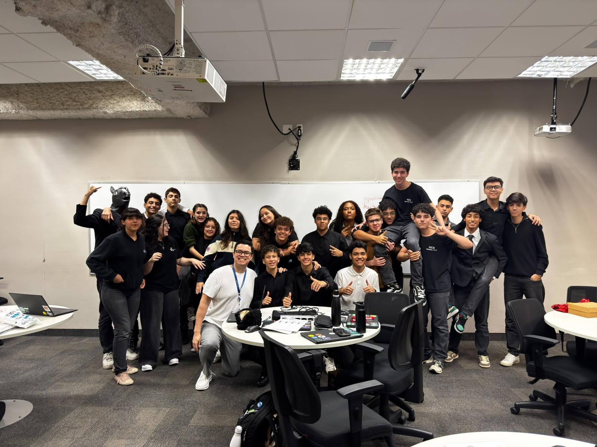
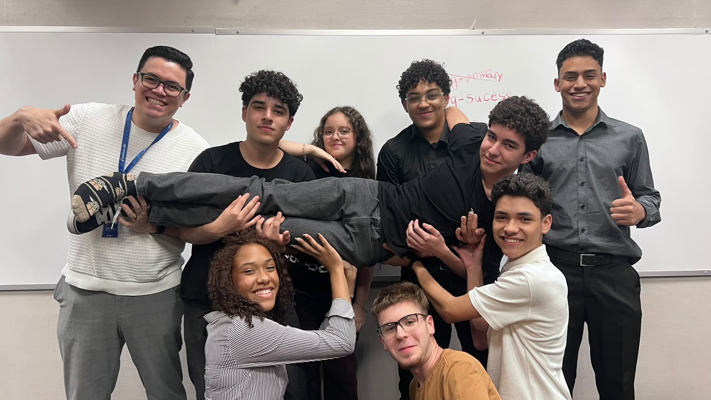
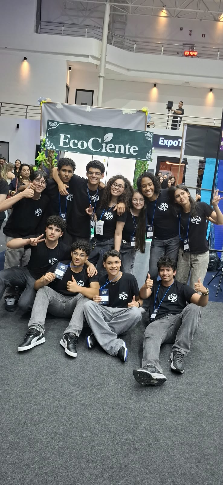
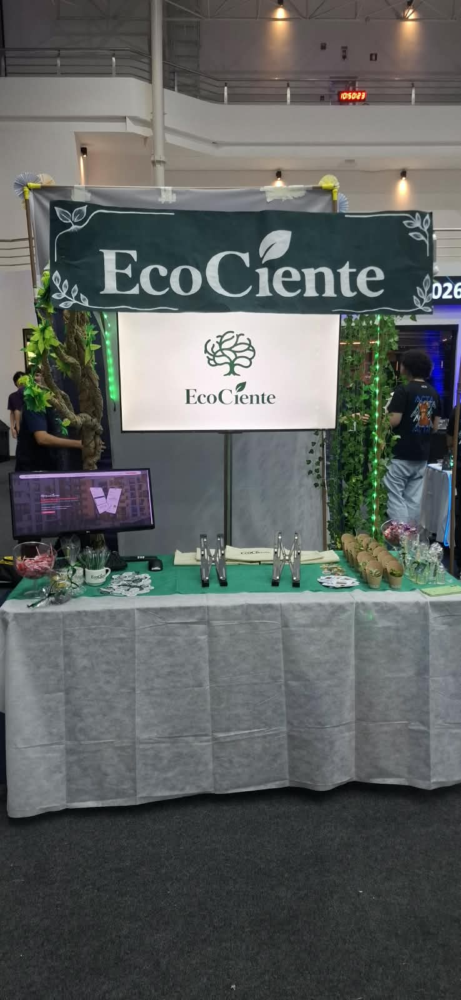

Instituto J&F · Projeto EcoCiente
Olá, eu sou o Miguel!
Tenho 16 anos, estudo desenvolvimento web e gosto de tecnologia, esportes e animes.
Sobre mim

Tenho 16 anos e nasci em Taboão da Serra no dia 17 de agosto de 2010, e moro em Itapecerica da Serra, com minha irmã meu pai e minha mãe, tenho 3 cachorros 2 shih tzus e um vira lata, gosto de jogar qualquer coisa com pessoas e de animes. Meu anime favorito é Tokyo Ghoul e meu jogo favorito é nenhum eu gosto de todos.
- Eu tenho Osgood-Schlatter.
- Gosto de Animes.
- Gosto de esportes.
- Gosto de jogos eletrônicos.
- Gosto de Minions.
- Gosto de música, Lil Peep é meu cantor favorito.
- Meu livro favorito é Salsichas Galáticas.
Onde eu estudo
Eu estudo no Instituto J&F. Lá fiz amizades, aprendi desenvolvimento web e participo de projetos junto com a minha turma.


Projeto EcoCiente
Eu faço parte do EcoCiente, um projeto do Instituto J&F que apresentamos na ExpoTech. Estes são os participantes e o nosso estande.

